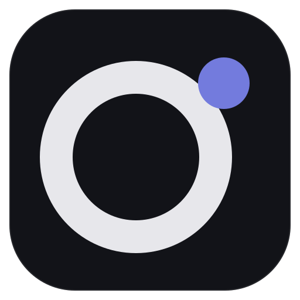

01
交易日志
记录实盘、模拟盘与错过机会，用阶段、策略和标签整理。
使用指南记录每一次决策，把零散经验沉淀为自己的交易体系。
数字只描述这组示例记录，不代表收益。要理解一笔交易，仍需打开日志里的依据和复盘正文。
不理想的执行，多发生在确认尚未完成的时候。每笔留下入场检查，缺少确认就继续等待。
抽到的是示例记录。如果重来，是否仍会在确认完成前下单？
把一笔交易的依据、执行和结论写成可回看的复盘正文。这里只作示意，完整起草在使用指南里。
示意工作台 · Yunkoo 示例资料库，不代表收益
双桌面平台Windows & macOS
本地资料库备份与导出由你管理
复盘路径记录、分析、沉淀
A BETTER TRADING ROUTINE
盈亏是结果，决策过程才是线索。
记录、分析与复盘，放在同一个工作台。
NOTES & REFLECTIONS
盘中观察、盘后情绪、反复提醒自己的纪律，用随记先留下来。
先记下观察和情绪，不必等到成交。
重要纪律置顶，零散想法变成可回看的笔记。
回到当时的判断，写下下次能执行的改进。
MAKE IT YOUR OWN
A PLACE FOR YOUR EXPERIENCE
交易记录保存在本地资料库。备份、导出和恢复，都由你自己管理。
A FEW THINGS TO KNOW
希望持续记录交易、整理执行、建立个人案例库的交易者。可以从一笔记起。
Windows 和 macOS 桌面客户端。安装包以发布页为准。
首屏是按桌面工作台用同一套视觉规则搭的示意界面，数据来自隔离示例资料库。下方画廊是真实客户端截图。都只作功能展示，不代表收益。

YOUR NEXT CHAPTER STARTS HERE
为 Windows 与 macOS 打造的交易日志与复盘工作台。